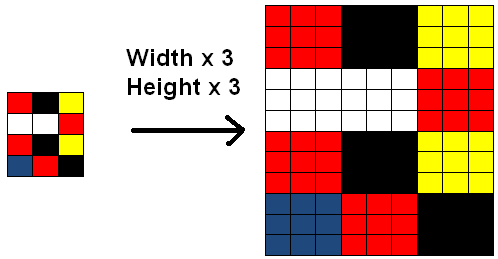

<!DOCTYPE HTML>
<html lang="" >
    <head>
        <meta charset="UTF-8">
        <meta content="text/html; charset=utf-8" http-equiv="Content-Type">
        <title>第七章_生成对抗网络(GAN) · GitBook</title>
        <meta http-equiv="X-UA-Compatible" content="IE=edge" />
        <meta name="description" content="">
        <meta name="generator" content="GitBook 3.2.3">
        
        
        
    
    <link rel="stylesheet" href="../gitbook/style.css">

    
            
                
                <link rel="stylesheet" href="../gitbook/gitbook-plugin-katex/katex.min.css">
                
            
                
                <link rel="stylesheet" href="../gitbook/gitbook-plugin-highlight/website.css">
                
            
                
                <link rel="stylesheet" href="../gitbook/gitbook-plugin-search/search.css">
                
            
                
                <link rel="stylesheet" href="../gitbook/gitbook-plugin-fontsettings/website.css">
                
            
        

    

    
        
    
        
    
        
    
        
    
        
    
        
    

        
    
    
    <meta name="HandheldFriendly" content="true"/>
    <meta name="viewport" content="width=device-width, initial-scale=1, user-scalable=no">
    <meta name="apple-mobile-web-app-capable" content="yes">
    <meta name="apple-mobile-web-app-status-bar-style" content="black">
    <link rel="apple-touch-icon-precomposed" sizes="152x152" href="../gitbook/images/apple-touch-icon-precomposed-152.png">
    <link rel="shortcut icon" href="../gitbook/images/favicon.ico" type="image/x-icon">

    
    <link rel="next" href="../ch08_目标检测/readme.html" />
    
    
    <link rel="prev" href="readme.html" />
    

    </head>
    <body>
        
<div class="book">
    <div class="book-summary">
        
            
<div id="book-search-input" role="search">
    <input type="text" placeholder="Type to search" />
</div>

            
                <nav role="navigation">
                


<ul class="summary">
    
    

    

    
        
        
    
        <li class="chapter " data-level="1.1" data-path="../">
            
                <a href="../">
            
                    
                    Introduction
            
                </a>
            

            
        </li>
    
        <li class="chapter " data-level="1.2" data-path="../ch01_数学基础/readme.html">
            
                <a href="../ch01_数学基础/readme.html">
            
                    
                    ch01_数学基础
            
                </a>
            

            
            <ul class="articles">
                
    
        <li class="chapter " data-level="1.2.1" data-path="../ch01_数学基础/第一章_数学基础.html">
            
                <a href="../ch01_数学基础/第一章_数学基础.html">
            
                    
                    第一章_数学基础.md
            
                </a>
            

            
        </li>
    

            </ul>
            
        </li>
    
        <li class="chapter " data-level="1.3" data-path="../ch02_机器学习基础/readme.html">
            
                <a href="../ch02_机器学习基础/readme.html">
            
                    
                    ch02_机器学习基础
            
                </a>
            

            
            <ul class="articles">
                
    
        <li class="chapter " data-level="1.3.1" data-path="../ch02_机器学习基础/第二章_机器学习基础.html">
            
                <a href="../ch02_机器学习基础/第二章_机器学习基础.html">
            
                    
                    第二章_机器学习基础.md
            
                </a>
            

            
        </li>
    

            </ul>
            
        </li>
    
        <li class="chapter " data-level="1.4" data-path="../ch03_深度学习基础/readme.html">
            
                <a href="../ch03_深度学习基础/readme.html">
            
                    
                    ch03_深度学习基础
            
                </a>
            

            
        </li>
    
        <li class="chapter " data-level="1.5" data-path="../ch04_经典网络/readme.html">
            
                <a href="../ch04_经典网络/readme.html">
            
                    
                    ch04_经典网络
            
                </a>
            

            
            <ul class="articles">
                
    
        <li class="chapter " data-level="1.5.1" data-path="../ch04_经典网络/第四章_经典网络.html">
            
                <a href="../ch04_经典网络/第四章_经典网络.html">
            
                    
                    第四章_经典网络.md
            
                </a>
            

            
        </li>
    

            </ul>
            
        </li>
    
        <li class="chapter " data-level="1.6" data-path="../ch05_卷积神经网络/readme.html">
            
                <a href="../ch05_卷积神经网络/readme.html">
            
                    
                    ch05_卷积神经网络CNN)
            
                </a>
            

            
            <ul class="articles">
                
    
        <li class="chapter " data-level="1.6.1" data-path="../ch05_卷积神经网络/第五章_卷积神经网络.html">
            
                <a href="../ch05_卷积神经网络/第五章_卷积神经网络.html">
            
                    
                    第五章 卷积神经网络（CNN)
            
                </a>
            

            
        </li>
    

            </ul>
            
        </li>
    
        <li class="chapter " data-level="1.7" data-path="../ch06_循环神经网络/readme.html">
            
                <a href="../ch06_循环神经网络/readme.html">
            
                    
                    ch06_循环神经网络(RNN)
            
                </a>
            

            
            <ul class="articles">
                
    
        <li class="chapter " data-level="1.7.1" data-path="../ch06_循环神经网络第六章_循环神经网络.md">
            
                <span>
            
                    
                    第六章_循环神经网络(RNN)
            
                </a>
            

            
        </li>
    

            </ul>
            
        </li>
    
        <li class="chapter " data-level="1.8" data-path="readme.html">
            
                <a href="readme.html">
            
                    
                    ch07_生成对抗网络(GAN)
            
                </a>
            

            
            <ul class="articles">
                
    
        <li class="chapter active" data-level="1.8.1" data-path="第七章_生成对抗网络.html">
            
                <a href="第七章_生成对抗网络.html">
            
                    
                    第七章_生成对抗网络(GAN)
            
                </a>
            

            
        </li>
    

            </ul>
            
        </li>
    
        <li class="chapter " data-level="1.9" data-path="../ch08_目标检测/readme.html">
            
                <a href="../ch08_目标检测/readme.html">
            
                    
                    ch08_目标检测
            
                </a>
            

            
            <ul class="articles">
                
    
        <li class="chapter " data-level="1.9.1" data-path="../ch08_目标检测/第八章_目标检测.html">
            
                <a href="../ch08_目标检测/第八章_目标检测.html">
            
                    
                    第八章_目标检测.md
            
                </a>
            

            
        </li>
    

            </ul>
            
        </li>
    
        <li class="chapter " data-level="1.10" data-path="../ch09_图像分割/readme.html">
            
                <a href="../ch09_图像分割/readme.html">
            
                    
                    ch09_图像分割
            
                </a>
            

            
            <ul class="articles">
                
    
        <li class="chapter " data-level="1.10.1" data-path="../ch09_图像分割/第九章_图像分割.html">
            
                <a href="../ch09_图像分割/第九章_图像分割.html">
            
                    
                    第九章_图像分割.md
            
                </a>
            

            
        </li>
    

            </ul>
            
        </li>
    
        <li class="chapter " data-level="1.11" data-path="../ch10_强化学习/readme.html">
            
                <a href="../ch10_强化学习/readme.html">
            
                    
                    ch10_强化学习
            
                </a>
            

            
            <ul class="articles">
                
    
        <li class="chapter " data-level="1.11.1" data-path="../ch10_强化学习/第十章_强化学习.html">
            
                <a href="../ch10_强化学习/第十章_强化学习.html">
            
                    
                    第十章_强化学习.md
            
                </a>
            

            
        </li>
    

            </ul>
            
        </li>
    
        <li class="chapter " data-level="1.12" data-path="../ch11_迁移学习/readme.html">
            
                <a href="../ch11_迁移学习/readme.html">
            
                    
                    ch11_迁移学习
            
                </a>
            

            
            <ul class="articles">
                
    
        <li class="chapter " data-level="1.12.1" data-path="../ch11_迁移学习/第十一章_迁移学习.html">
            
                <a href="../ch11_迁移学习/第十一章_迁移学习.html">
            
                    
                    第十一章_迁移学习.md
            
                </a>
            

            
        </li>
    

            </ul>
            
        </li>
    
        <li class="chapter " data-level="1.13" data-path="../ch12_网络搭建及训练/readme.html">
            
                <a href="../ch12_网络搭建及训练/readme.html">
            
                    
                    ch12_网络搭建及训练
            
                </a>
            

            
            <ul class="articles">
                
    
        <li class="chapter " data-level="1.13.1" data-path="../ch12_网络搭建及训练/第十二章_网络搭建及训练.html">
            
                <a href="../ch12_网络搭建及训练/第十二章_网络搭建及训练.html">
            
                    
                    第十二章_网络搭建及训练.md
            
                </a>
            

            
        </li>
    

            </ul>
            
        </li>
    
        <li class="chapter " data-level="1.14" data-path="../ch13_优化算法/readme.html">
            
                <a href="../ch13_优化算法/readme.html">
            
                    
                    ch13_优化算法
            
                </a>
            

            
            <ul class="articles">
                
    
        <li class="chapter " data-level="1.14.1" data-path="../ch13_优化算法/第十三章_优化算法.html">
            
                <a href="../ch13_优化算法/第十三章_优化算法.html">
            
                    
                    第十三章_优化算法.md
            
                </a>
            

            
        </li>
    

            </ul>
            
        </li>
    
        <li class="chapter " data-level="1.15" data-path="../ch14_超参数调整/readme.html">
            
                <a href="../ch14_超参数调整/readme.html">
            
                    
                    ch14_超参数调整
            
                </a>
            

            
            <ul class="articles">
                
    
        <li class="chapter " data-level="1.15.1" data-path="../ch14_超参数调整/第十四章_超参数调整.html">
            
                <a href="../ch14_超参数调整/第十四章_超参数调整.html">
            
                    
                    第十四章_超参数调整.md
            
                </a>
            

            
        </li>
    

            </ul>
            
        </li>
    
        <li class="chapter " data-level="1.16" data-path="../ch15_GPU和框架选型/readme.html">
            
                <a href="../ch15_GPU和框架选型/readme.html">
            
                    
                    ch15_GPU和框架选型
            
                </a>
            

            
            <ul class="articles">
                
    
        <li class="chapter " data-level="1.16.1" data-path="../ch15_GPU和框架选型/第十五章_异构运算、GPU及框架选型.html">
            
                <a href="../ch15_GPU和框架选型/第十五章_异构运算、GPU及框架选型.html">
            
                    
                    第十五章_异构运算、GPU及框架选型.md
            
                </a>
            

            
        </li>
    

            </ul>
            
        </li>
    
        <li class="chapter " data-level="1.17" data-path="../ch16_自然语言处理/readme.html">
            
                <a href="../ch16_自然语言处理/readme.html">
            
                    
                    ch16_自然语言处理(NLP)
            
                </a>
            

            
            <ul class="articles">
                
    
        <li class="chapter " data-level="1.17.1" data-path="../ch16_自然语言处理/第十六章_NLP.html">
            
                <a href="../ch16_自然语言处理/第十六章_NLP.html">
            
                    
                    第十六章_NLP.md
            
                </a>
            

            
        </li>
    

            </ul>
            
        </li>
    
        <li class="chapter " data-level="1.18" data-path="../ch17_模型压缩、加速及移动端部署/readme.html">
            
                <a href="../ch17_模型压缩、加速及移动端部署/readme.html">
            
                    
                    ch17_模型压缩、加速及移动端部署
            
                </a>
            

            
            <ul class="articles">
                
    
        <li class="chapter " data-level="1.18.1" data-path="../ch17_模型压缩、加速及移动端部署/第十七章_模型压缩、加速及移动端部署.html">
            
                <a href="../ch17_模型压缩、加速及移动端部署/第十七章_模型压缩、加速及移动端部署.html">
            
                    
                    第十七章_模型压缩、加速及移动端部署
            
                </a>
            

            
        </li>
    

            </ul>
            
        </li>
    
        <li class="chapter " data-level="1.19" data-path="../ch18_后端架构选型、离线及实时计算/readme.html">
            
                <a href="../ch18_后端架构选型、离线及实时计算/readme.html">
            
                    
                    ch18_后端架构选型、离线及实时计算
            
                </a>
            

            
            <ul class="articles">
                
    
        <li class="chapter " data-level="1.19.1" data-path="../ch18_后端架构选型、离线及实时计算/第十八章_后端架构选型、离线及实时计算.html">
            
                <a href="../ch18_后端架构选型、离线及实时计算/第十八章_后端架构选型、离线及实时计算.html">
            
                    
                    第十八章_后端架构选型、离线及实时计算
            
                </a>
            

            
        </li>
    

            </ul>
            
        </li>
    

    

    <li class="divider"></li>

    <li>
        <a href="https://www.gitbook.com" target="blank" class="gitbook-link">
            Published with GitBook
        </a>
    </li>
</ul>


                </nav>
            
        
    </div>

    <div class="book-body">
        
            <div class="body-inner">
                
                    

<div class="book-header" role="navigation">
    

    <!-- Title -->
    <h1>
        <i class="fa fa-circle-o-notch fa-spin"></i>
        <a href=".." >第七章_生成对抗网络(GAN)</a>
    </h1>
</div>


                    <div class="page-wrapper" tabindex="-1" role="main">
                        <div class="page-inner">
                            
<div id="book-search-results">
    <div class="search-noresults">
    
                                <section class="normal markdown-section">
                                
                                <p>[TOC]</p>
<h1 id="&#x7B2C;&#x4E03;&#x7AE0;&#x751F;&#x6210;&#x5BF9;&#x6297;&#x7F51;&#x7EDC;gan">&#x7B2C;&#x4E03;&#x7AE0;_&#x751F;&#x6210;&#x5BF9;&#x6297;&#x7F51;&#x7EDC;(GAN)</h1>
<h2 id="71-gan&#x7684;&#x300C;&#x751F;&#x6210;&#x300D;&#x7684;&#x672C;&#x8D28;&#x662F;&#x4EC0;&#x4E48;&#xFF1F;">7.1 GAN&#x7684;&#x300C;&#x751F;&#x6210;&#x300D;&#x7684;&#x672C;&#x8D28;&#x662F;&#x4EC0;&#x4E48;&#xFF1F;</h2>
<p>GAN&#x7684;&#x5F62;&#x5F0F;&#x662F;&#xFF1A;&#x4E24;&#x4E2A;&#x7F51;&#x7EDC;&#xFF0C;G&#xFF08;Generator&#xFF09;&#x548C;D&#xFF08;Discriminator&#xFF09;&#x3002;Generator&#x662F;&#x4E00;&#x4E2A;&#x751F;&#x6210;&#x56FE;&#x7247;&#x7684;&#x7F51;&#x7EDC;&#xFF0C;&#x5B83;&#x63A5;&#x6536;&#x4E00;&#x4E2A;&#x968F;&#x673A;&#x7684;&#x566A;&#x58F0;z&#xFF0C;&#x8BB0;&#x505A;G(z)&#x3002;Discriminator&#x662F;&#x4E00;&#x4E2A;&#x5224;&#x522B;&#x7F51;&#x7EDC;&#xFF0C;&#x5224;&#x522B;&#x4E00;&#x5F20;&#x56FE;&#x7247;&#x662F;&#x4E0D;&#x662F;&#x201C;&#x771F;&#x5B9E;&#x7684;&#x201D;&#x3002;&#x5B83;&#x7684;&#x8F93;&#x5165;&#x662F;x&#xFF0C;x&#x4EE3;&#x8868;&#x4E00;&#x5F20;&#x56FE;&#x7247;&#xFF0C;&#x8F93;&#x51FA;D&#xFF08;x&#xFF09;&#x4EE3;&#x8868;x&#x4E3A;&#x771F;&#x5B9E;&#x56FE;&#x7247;&#x7684;&#x6982;&#x7387;&#xFF0C;&#x5982;&#x679C;&#x4E3A;1&#xFF0C;&#x5C31;&#x4EE3;&#x8868;100%&#x662F;&#x771F;&#x5B9E;&#x7684;&#x56FE;&#x7247;&#xFF0C;&#x800C;&#x8F93;&#x51FA;&#x4E3A;0&#xFF0C;&#x5C31;&#x4EE3;&#x8868;&#x4E0D;&#x53EF;&#x80FD;&#x662F;&#x771F;&#x5B9E;&#x7684;&#x56FE;&#x7247;&#x3002;</p>
<p>GAN<em>&#x751F;&#x6210;</em>&#x80FD;&#x529B;&#x662F;<em>&#x5B66;&#x4E60;&#x5206;&#x5E03;</em>&#xFF0C;&#x5F15;&#x5165;&#x7684;latent variable&#x7684;noise&#x4F7F;&#x4E60;&#x5F97;&#x7684;&#x6982;&#x7387;&#x5206;&#x5E03;&#x8FDB;&#x884C;&#x504F;&#x79FB;&#x3002;&#x56E0;&#x6B64;&#x5728;&#x8BAD;&#x7EC3;GAN&#x7684;&#x65F6;&#x5019;&#xFF0C;latent variable<strong>&#x4E0D;&#x80FD;</strong>&#x5F15;&#x5165;&#x5747;&#x5300;&#x5206;&#x5E03;&#xFF08;uniform distribution)&#xFF0C;&#x56E0;&#x4E3A;&#x5747;&#x5300;&#x5206;&#x5E03;&#x7684;&#x6570;&#x636E;&#x7684;&#x5F15;&#x5165;&#x5E76;&#x4E0D;&#x4F1A;&#x6539;&#x53D8;&#x6982;&#x7387;&#x5206;&#x5E03;&#x3002;</p>
<h2 id="72-gan&#x80FD;&#x505A;&#x6570;&#x636E;&#x589E;&#x5E7F;&#x5417;&#xFF1F;">7.2 GAN&#x80FD;&#x505A;&#x6570;&#x636E;&#x589E;&#x5E7F;&#x5417;&#xFF1F;</h2>
<p>GAN&#x80FD;&#x591F;&#x4ECE;&#x4E00;&#x4E2A;&#x6A21;&#x578B;&#x5F15;&#x5165;&#x4E00;&#x4E2A;&#x968F;&#x673A;&#x6570;&#x4E4B;&#x540E;&#x300C;&#x751F;&#x6210;&#x300D;&#x65E0;&#x9650;&#x7684;output&#xFF0C;&#x7528;GAN&#x6765;&#x505A;&#x6570;&#x636E;&#x589E;&#x5E7F;&#x4F3C;&#x4E4E;&#x5F88;&#x6709;&#x5438;&#x5F15;&#x529B;&#x5E76;&#x4E14;&#x662F;&#x4E00;&#x4E2A;&#x6781;&#x6E05;&#x6670;&#x7684;&#x4E00;&#x4E2A;insight&#x3002;&#x7136;&#x800C;&#xFF0C;&#x7EB5;&#x89C2;&#x6574;&#x4E2A;GAN&#x7684;&#x8BAD;&#x7EC3;&#x8FC7;&#x7A0B;&#xFF0C;Generator&#x4E60;&#x5F97;&#x5206;&#x5E03;&#x518D;&#x5F15;&#x5165;&#x4E00;&#x4E2A;Distribution(Gaussian&#x6216;&#x5176;&#x4ED6;)&#x7684;&#x566A;&#x58F0;&#x4EE5;&#x300C;&#x9A97;&#x8FC7;&#x300D;Discriminator&#xFF0C;&#x5E76;&#x4E14;&#x65E0;&#x8BBA;&#x662F;KL Divergence&#x6216;&#x662F;Wasserstein Divergence&#xFF0C;&#x672C;&#x8D28;&#x8FD8;&#x662F;&#x4FE1;&#x606F;&#x8861;&#x91CF;&#x7684;&#x624B;&#x6BB5;&#xFF08;&#x5728;&#x672C;&#x7AE0;&#x4E2D;&#x5176;&#x4F59;&#x90E8;&#x5206;&#x4ECB;&#x7ECD;&#xFF09;&#xFF0C;&#x80FD;&#x300C;&#x9A97;&#x8FC7;&#x300D;Discriminator&#x7684;Generator&#x4E00;&#x5B9A;&#x662F;&#x80FD;&#x5728;&#x5F15;&#x5165;&#x4E00;&#x4E2A;Distribution&#x7684;&#x566A;&#x58F0;&#x7684;&#x60C5;&#x51B5;&#x4E0B;&#x6700;&#x597D;&#x7684;&#x7ED3;&#x5408;&#x5DF2;&#x6709;&#x4FE1;&#x606F;&#x3002;</p>
<p>&#x8BAD;&#x7EC3;&#x597D;&#x7684;GAN&#x5E94;&#x8BE5;&#x80FD;&#x591F;&#x5F88;&#x597D;&#x7684;&#x4F7F;&#x7528;&#x5DF2;&#x6709;&#x7684;&#x6570;&#x636E;&#x7684;&#x4FE1;&#x606F;&#xFF08;&#x7279;&#x5F81;&#x6216;&#x5206;&#x5E03;&#xFF09;&#xFF0C;&#x73B0;&#x5728;&#x95EE;&#x9898;&#x6765;&#x4E86;&#xFF0C;&#x8FD9;&#x4E9B;&#x4FE1;&#x606F;&#x672C;&#x6765;&#x5C31;&#x5305;&#x542B;&#x5728;&#x6570;&#x636E;&#x91CC;&#x9762;&#xFF0C;&#x6709;&#x5FC5;&#x8981;&#x628A;&#x4FE1;&#x606F;&#x4E22;&#x5230;Generator&#x5B66;&#x4E60;&#x4F7F;&#x5F97;&#x7684;&#x7ED3;&#x679C;&#x52A0;&#x4E0A;&#x566A;&#x58F0;&#x4F5C;&#x4E3A;&#x8BAD;&#x7EC3;&#x6A21;&#x578B;&#x7684;&#x8F93;&#x5165;&#x5417;&#xFF1F;</p>
<h2 id="73-vae&#x4E0E;gan&#x6709;&#x4EC0;&#x4E48;&#x4E0D;&#x540C;&#xFF1F;">7.3 VAE&#x4E0E;GAN&#x6709;&#x4EC0;&#x4E48;&#x4E0D;&#x540C;&#xFF1F;</h2>
<ol>
<li>VAE&#x53EF;&#x4EE5;&#x76F4;&#x63A5;&#x7528;&#x5728;&#x79BB;&#x6563;&#x578B;&#x6570;&#x636E;&#x3002;</li>
<li>VAE&#x6574;&#x4E2A;&#x8BAD;&#x7EC3;&#x6D41;&#x7A0B;&#x53EA;&#x9760;&#x4E00;&#x4E2A;&#x5047;&#x8BBE;&#x7684;loss&#x51FD;&#x6570;&#x548C;KL Divergence&#x903C;&#x8FD1;&#x771F;&#x5B9E;&#x5206;&#x5E03;&#x3002;GAN&#x6CA1;&#x6709;&#x5047;&#x8BBE;&#x5355;&#x4E2A;loss&#x51FD;&#x6570;, &#x800C;&#x662F;&#x8BA9;&#x5224;&#x522B;&#x5668;D&#x548C;&#x751F;&#x6210;&#x5668;G&#x4E92;&#x76F8;&#x535A;&#x5F08;&#xFF0C;&#x4EE5;&#x671F;&#x5F97;&#x5230;Nash Equilibrium&#x3002;</li>
</ol>
<h2 id="74-&#x6709;&#x54EA;&#x4E9B;&#x4F18;&#x79C0;&#x7684;gan&#xFF1F;">7.4 &#x6709;&#x54EA;&#x4E9B;&#x4F18;&#x79C0;&#x7684;GAN&#xFF1F;</h2>
<h3 id="741-dcgan">7.4.1 DCGAN</h3>
<p><a href="http://arxiv.org/abs/1511.06434" target="_blank">DCGAN</a>&#x662F;GAN&#x8F83;&#x4E3A;&#x65E9;&#x671F;&#x7684;&#x300C;&#x751F;&#x6210;&#x300D;&#x6548;&#x679C;&#x6700;&#x597D;&#x7684;GAN&#x4E86;&#xFF0C;&#x5F88;&#x591A;&#x4EBA;&#x7528;DCGAN&#x7684;&#x7B80;&#x5355;&#x3001;&#x6709;&#x6548;&#x7684;&#x751F;&#x6210;&#x80FD;&#x529B;&#x505A;&#x4E86;&#x5F88;&#x591A;&#x5F88;&#x76AE;&#x7684;&#x5DE5;&#x4F5C;&#xFF0C;&#x6BD4;&#x5982;<a href="https://blog.csdn.net/liuxiao214/article/details/74502975" target="_blank">GAN&#x751F;&#x6210;&#x4E8C;&#x6B21;&#x5143;&#x840C;&#x59B9;</a>&#x4E4B;&#x7C7B;&#x3002;
&#x5173;&#x4E8E;DCGAN&#x4E3B;&#x8981;&#x96C6;&#x4E2D;&#x8BA8;&#x8BBA;&#x4EE5;&#x4E0B;&#x95EE;&#x9898;&#xFF1A;</p>
<ol>
<li>DCGAN&#x7684;contribution&#xFF1F;</li>
<li>DCGAN&#x5B9E;&#x64CD;&#x4E0A;&#x6709;&#x4EC0;&#x4E48;&#x95EE;&#x9898;&#xFF1F;</li>
</ol>
<p>&#x6548;&#x679C;&#x597D;&#x4E2A;&#x4EBA;&#x4E3B;&#x8981;&#x8BA4;&#x4E3A;&#x662F;&#x5F15;&#x5165;&#x4E86;&#x5377;&#x79EF;&#x5E76;&#x4E14;&#x7ED9;&#x4E86;&#x4E00;&#x4E2A;&#x975E;&#x5E38;&#x4F18;&#x96C5;&#x7684;&#x7ED3;&#x6784;&#xFF0C;DCGAN&#x7684;Generator&#x548C;Discriminator&#x51E0;&#x4E4E;&#x662F;<strong>&#x5BF9;&#x79F0;&#x7684;</strong>&#xFF0C;&#x800C;&#x4E4B;&#x540E;&#x5F88;&#x591A;&#x7814;&#x7A76;&#x90FD;&#x9075;&#x4ECE;&#x4E86;&#x8FD9;&#x4E2A;&#x5BF9;&#x79F0;&#x7ED3;&#x6784;&#xFF0C;&#x5982;&#x6B64;&#x770B;&#x6765;&#x5B66;&#x754C;&#x5BF9;&#x8FD9;&#x79CD;&#x5BF9;&#x79F0;&#x67B6;&#x6784;&#x6709;&#x6781;&#x5927;&#x7684;&#x80AF;&#x5B9A;&#x3002;&#x5B8C;&#x5168;&#x4F7F;&#x7528;&#x4E86;&#x5377;&#x79EF;&#x5C42;&#x4EE3;&#x66FF;&#x5168;&#x94FE;&#x63A5;&#x5C42;&#xFF0C;&#x6CA1;&#x6709;pooling&#x548C;upsample&#x3002;&#x5176;&#x4E2D;upsample&#x662F;&#x5C06;low resolution&#x5230;high resolution&#x7684;&#x65B9;&#x6CD5;&#xFF0C;&#x800C;DCGAN&#x7528;&#x5377;&#x79EF;&#x7684;&#x9006;&#x8FD0;&#x7B97;&#x6765;&#x5B8C;&#x6210;low resolution&#x5230;high resolution&#x7684;&#x64CD;&#x4F5C;&#xFF0C;&#x8FD9;&#x7B80;&#x5355;&#x7684;&#x66FF;&#x6362;&#x4E3A;&#x4EC0;&#x4E48;&#x6210;&#x4E3A;&#x63D0;&#x5347;GAN&#x7A33;&#x5B9A;&#x6027;&#x7684;&#x539F;&#x56E0;&#xFF1F;
</p>
<p>&#x56FE;&#x4E2D;&#x662F;Upsample&#x7684;&#x539F;&#x7406;&#x56FE;&#xFF0C;&#x5341;&#x5206;&#x7684;&#x76F4;&#x89C2;&#xFF0C;&#x5B9B;&#x5982;&#x4F4E;&#x5206;&#x5C4F;&#x6362;&#x9AD8;&#x5206;&#x5C4F;&#x3002;&#x7136;&#x800C;Upsample&#x548C;&#x9006;&#x5377;&#x79EF;&#x6700;&#x5927;&#x7684;&#x4E0D;&#x4E00;&#x6837;&#x662F;Upsample&#x5176;&#x5B9E;&#x53EA;&#x80FD;&#x653E;&#x4E00;&#x6837;&#x7684;&#x989C;&#x8272;&#x6765;&#x586B;&#x5145;&#xFF0C;&#x800C;&#x9006;&#x5377;&#x79EF;&#x5B83;&#x662F;&#x4E2A;&#x6C42;&#x503C;&#x7684;&#x8FC7;&#x7A0B;&#xFF0C;&#x4E5F;&#x5C31;&#x662F;&#x5B83;&#x8981;&#x7B97;&#x51FA;&#x4E00;&#x4E2A;&#x5177;&#x4F53;&#x503C;&#x6765;&#xFF0C;&#x53EF;&#x80FD;&#x662F;&#x4E00;&#x6837;&#x7684;&#x4E5F;&#x53EF;&#x80FD;&#x662F;&#x4E0D;&#x4E00;&#x6837;&#x7684;&#x2014;&#x2014;&#x5982;&#x6B64;&#xFF0C;&#x5B70;&#x4F18;&#x5B70;&#x52A3;&#x9AD8;&#x4E0B;&#x7ACB;&#x5224;&#x3002;</p>
<p>DCGAN&#x63D0;&#x51FA;&#x4E86;&#x5176;&#x751F;&#x6210;&#x7684;&#x7279;&#x5F81;&#x5177;&#x6709;&#x5411;&#x91CF;&#x7684;&#x8BA1;&#x7B97;&#x7279;&#x6027;&#x3002;</p>
<p><a href="https://github.com/jacobgil/keras-dcgan" target="_blank">DCGAN Keras&#x5B9E;&#x73B0;</a></p>
<h3 id="742-wganwgan-gp">7.4.2 WGAN/WGAN-GP</h3>
<p>WGAN&#x53CA;&#x5176;&#x5EF6;&#x4F38;&#x662F;&#x88AB;&#x8BA8;&#x8BBA;&#x7684;&#x6700;&#x591A;&#x7684;&#x90E8;&#x5206;&#xFF0C;&#x539F;&#x6587;&#x8FDE;&#x53D1;&#x4E24;&#x6587;&#xFF0C;&#x7B2C;&#x4E00;&#x7BC7;(Towards principled methods for training generative adversarial networks)&#x975E;&#x5E38;solid&#x7684;&#x63D0;&#x4E86;&#x4E00;&#x5806;&#x7684;&#x6570;&#x5B66;&#xFF0C;&#x4E00;&#x4F5C;Arjovsky&#x514B;&#x6717;&#x6240;&#x7684;&#x6570;&#x5B66;&#x80FD;&#x529B;&#x679C;&#x7136;&#x4E00;&#x4E2A;&#x6253;&#x5341;&#x51E0;&#x4E2A;&#x3002;&#x540E;&#x6765;&#x7ED9;&#x4E86;&#x7B2C;&#x4E8C;&#x7BC7;Wasserstein GAN&#xFF0C;&#x53EF;&#x4EE5;&#x8BF4;&#x76F4;&#x63A5;&#x7ED9;&#x7ED3;&#x679C;&#x4E86;&#xFF0C;&#x548C;&#x7B2C;&#x4E00;&#x7BC7;&#x76F8;&#x6BD4;&#xFF0C;&#x7B2C;&#x4E8C;&#x7BC7;&#x66F4;&#x52A0;&#x597D;&#x63A5;&#x53D7;&#x3002;</p>
<p>&#x7136;&#x800C;Wasserstein Divergence&#x771F;&#x6B63;&#x725B;&#x903C;&#x7684;&#x5730;&#x65B9;&#x5728;&#x4E8E;&#xFF0C;&#x51E0;&#x4E4E;&#x5BF9;&#x6240;&#x6709;&#x7684;GAN&#xFF0C;Wasserstein Divergence&#x53EF;&#x4EE5;&#x76F4;&#x63A5;&#x79D2;&#x6389;KL Divergence&#x3002;&#x90A3;&#x4E48;&#x8FD9;&#x4E2A;&#x65F6;&#x5019;&#x5C31;&#x6709;&#x4E2A;&#x95EE;&#x9898;&#x547C;&#x4E4B;&#x6B32;&#x51FA;&#x4E86;&#xFF1A;</p>
<p><strong>KL/JS Divergence&#x4E3A;&#x4EC0;&#x4E48;&#x4E0D;&#x597D;&#x7528;&#xFF1F;Wasserstein Divergence&#x725B;&#x903C;&#x5728;&#x54EA;&#x91CC;&#xFF1F;</strong></p>
<p><strong>KL Divergence</strong>&#x662F;&#x4E24;&#x4E2A;&#x6982;&#x7387;&#x5206;&#x5E03;P&#x548C;Q&#x5DEE;&#x522B;&#x7684;<strong>&#x975E;&#x5BF9;&#x79F0;&#x6027;</strong>&#x7684;&#x5EA6;&#x91CF;&#x3002;KL Divergence&#x662F;&#x7528;&#x6765;&#x5EA6;&#x91CF;&#x4F7F;&#x7528;&#x57FA;&#x4E8E;Q&#x7684;&#x7F16;&#x7801;&#x6765;&#x7F16;&#x7801;&#x6765;&#x81EA;P&#x7684;&#x6837;&#x672C;&#x5E73;&#x5747;&#x6240;&#x9700;&#x7684;&#x989D;&#x5916;&#x7684;&#x4F4D;&#x5143;&#x6570;&#xFF08;&#x5373;&#x5206;&#x5E03;&#x7684;&#x5E73;&#x79FB;&#x91CF;&#xFF09;&#x3002; &#x800C;<strong>JS Divergence</strong>&#x662F;KL Divergence&#x7684;&#x5347;&#x7EA7;&#x7248;&#xFF0C;&#x89E3;&#x51B3;&#x7684;&#x662F;<strong>&#x5BF9;&#x79F0;&#x6027;</strong>&#x7684;&#x95EE;&#x9898;&#x3002;&#x5373;&#xFF1A;JS Divergence&#x662F;&#x5BF9;&#x79F0;&#x7684;&#x3002;&#x5E76;&#x4E14;&#x7531;&#x4E8E;KL Divergence&#x4E0D;&#x5177;&#x6709;&#x5F88;&#x597D;&#x7684;&#x5BF9;&#x79F0;&#x6027;&#xFF0C;&#x5C06;KL Divergence&#x8003;&#x8651;&#x6210;&#x8DDD;&#x79BB;&#x53EF;&#x80FD;&#x662F;&#x7AD9;&#x4E0D;&#x4F4F;&#x811A;&#x7684;&#xFF0C;&#x5E76;&#x4E14;&#x53EF;&#x4EE5;&#x7531;KL Divergence&#x7684;&#x516C;&#x5F0F;&#x4E2D;&#x770B;&#x51FA;&#x6765;&#xFF0C;&#x5E73;&#x79FB;&#x91CF;<span class="katex"><span class="katex-mathml"><math><semantics><mrow><mo>&#x2192;</mo><mn>0</mn></mrow><annotation encoding="application/x-tex">\to 0</annotation></semantics></math></span><span class="katex-html" aria-hidden="true"><span class="base"><span class="strut" style="height:0.36687em;vertical-align:0em;"></span><span class="mrel">&#x2192;</span><span class="mspace" style="margin-right:0.2777777777777778em;"></span></span><span class="base"><span class="strut" style="height:0.64444em;vertical-align:0em;"></span><span class="mord">0</span></span></span></span>&#x7684;&#x65F6;&#x5019;&#xFF0C;KL Divergence&#x76F4;&#x63A5;&#x70B8;&#x4E86;&#x3002;</p>
<p>KL Divergence:
<span class="katex"><span class="katex-mathml"><math><semantics><mrow><msub><mi>D</mi><mrow><mi>K</mi><mi>L</mi></mrow></msub><mo>(</mo><mi>P</mi><mi mathvariant="normal">&#x2223;</mi><mi mathvariant="normal">&#x2223;</mi><mi>Q</mi><mo>)</mo><mo>=</mo><mo>&#x2212;</mo><msub><mo>&#x2211;</mo><mrow><mi>x</mi><mo>&#x2208;</mo><mi>X</mi></mrow></msub><mi>P</mi><mo>(</mo><mi>x</mi><mo>)</mo><mi>l</mi><mi>o</mi><mi>g</mi><mfrac><mn>1</mn><mrow><mi>P</mi><mo>(</mo><mi>x</mi><mo>)</mo></mrow></mfrac><mo>+</mo><msub><mo>&#x2211;</mo><mrow><mi>x</mi><mo>&#x2208;</mo><mi>X</mi></mrow></msub><mi>p</mi><mo>(</mo><mi>x</mi><mo>)</mo><mi>l</mi><mi>o</mi><mi>g</mi><mfrac><mn>1</mn><mrow><mi>Q</mi><mo>(</mo><mi>x</mi><mo>)</mo></mrow></mfrac><mo>=</mo><msub><mo>&#x2211;</mo><mrow><mi>x</mi><mo>&#x2208;</mo><mi>X</mi></mrow></msub><mi>p</mi><mo>(</mo><mi>x</mi><mo>)</mo><mi>l</mi><mi>o</mi><mi>g</mi><mfrac><mrow><mi>P</mi><mo>(</mo><mi>x</mi><mo>)</mo></mrow><mrow><mi>Q</mi><mo>(</mo><mi>x</mi><mo>)</mo></mrow></mfrac></mrow><annotation encoding="application/x-tex">D_{KL}(P||Q)=-\sum_{x\in X}P(x) log\frac{1}{P(x)}+\sum_{x\in X}p(x)log\frac{1}{Q(x)}=\sum_{x\in X}p(x)log\frac{P(x)}{Q(x)}</annotation></semantics></math></span><span class="katex-html" aria-hidden="true"><span class="base"><span class="strut" style="height:1em;vertical-align:-0.25em;"></span><span class="mord"><span class="mord mathit" style="margin-right:0.02778em;">D</span><span class="msupsub"><span class="vlist-t vlist-t2"><span class="vlist-r"><span class="vlist" style="height:0.32833099999999993em;"><span style="top:-2.5500000000000003em;margin-left:-0.02778em;margin-right:0.05em;"><span class="pstrut" style="height:2.7em;"></span><span class="sizing reset-size6 size3 mtight"><span class="mord mtight"><span class="mord mathit mtight" style="margin-right:0.07153em;">K</span><span class="mord mathit mtight">L</span></span></span></span></span><span class="vlist-s">&#x200B;</span></span><span class="vlist-r"><span class="vlist" style="height:0.15em;"><span></span></span></span></span></span></span><span class="mopen">(</span><span class="mord mathit" style="margin-right:0.13889em;">P</span><span class="mord">&#x2223;</span><span class="mord">&#x2223;</span><span class="mord mathit">Q</span><span class="mclose">)</span><span class="mspace" style="margin-right:0.2777777777777778em;"></span><span class="mrel">=</span><span class="mspace" style="margin-right:0.2777777777777778em;"></span></span><span class="base"><span class="strut" style="height:1.365108em;vertical-align:-0.52em;"></span><span class="mord">&#x2212;</span><span class="mspace" style="margin-right:0.16666666666666666em;"></span><span class="mop"><span class="mop op-symbol small-op" style="position:relative;top:-0.0000050000000000050004em;">&#x2211;</span><span class="msupsub"><span class="vlist-t vlist-t2"><span class="vlist-r"><span class="vlist" style="height:0.17862099999999992em;"><span style="top:-2.40029em;margin-left:0em;margin-right:0.05em;"><span class="pstrut" style="height:2.7em;"></span><span class="sizing reset-size6 size3 mtight"><span class="mord mtight"><span class="mord mathit mtight">x</span><span class="mrel mtight">&#x2208;</span><span class="mord mathit mtight" style="margin-right:0.07847em;">X</span></span></span></span></span><span class="vlist-s">&#x200B;</span></span><span class="vlist-r"><span class="vlist" style="height:0.32708000000000004em;"><span></span></span></span></span></span></span><span class="mspace" style="margin-right:0.16666666666666666em;"></span><span class="mord mathit" style="margin-right:0.13889em;">P</span><span class="mopen">(</span><span class="mord mathit">x</span><span class="mclose">)</span><span class="mord mathit" style="margin-right:0.01968em;">l</span><span class="mord mathit">o</span><span class="mord mathit" style="margin-right:0.03588em;">g</span><span class="mord"><span class="mopen nulldelimiter"></span><span class="mfrac"><span class="vlist-t vlist-t2"><span class="vlist-r"><span class="vlist" style="height:0.845108em;"><span style="top:-2.655em;"><span class="pstrut" style="height:3em;"></span><span class="sizing reset-size6 size3 mtight"><span class="mord mtight"><span class="mord mathit mtight" style="margin-right:0.13889em;">P</span><span class="mopen mtight">(</span><span class="mord mathit mtight">x</span><span class="mclose mtight">)</span></span></span></span><span style="top:-3.23em;"><span class="pstrut" style="height:3em;"></span><span class="frac-line" style="border-bottom-width:0.04em;"></span></span><span style="top:-3.394em;"><span class="pstrut" style="height:3em;"></span><span class="sizing reset-size6 size3 mtight"><span class="mord mtight"><span class="mord mtight">1</span></span></span></span></span><span class="vlist-s">&#x200B;</span></span><span class="vlist-r"><span class="vlist" style="height:0.52em;"><span></span></span></span></span></span><span class="mclose nulldelimiter"></span></span><span class="mspace" style="margin-right:0.2222222222222222em;"></span><span class="mbin">+</span><span class="mspace" style="margin-right:0.2222222222222222em;"></span></span><span class="base"><span class="strut" style="height:1.365108em;vertical-align:-0.52em;"></span><span class="mop"><span class="mop op-symbol small-op" style="position:relative;top:-0.0000050000000000050004em;">&#x2211;</span><span class="msupsub"><span class="vlist-t vlist-t2"><span class="vlist-r"><span class="vlist" style="height:0.17862099999999992em;"><span style="top:-2.40029em;margin-left:0em;margin-right:0.05em;"><span class="pstrut" style="height:2.7em;"></span><span class="sizing reset-size6 size3 mtight"><span class="mord mtight"><span class="mord mathit mtight">x</span><span class="mrel mtight">&#x2208;</span><span class="mord mathit mtight" style="margin-right:0.07847em;">X</span></span></span></span></span><span class="vlist-s">&#x200B;</span></span><span class="vlist-r"><span class="vlist" style="height:0.32708000000000004em;"><span></span></span></span></span></span></span><span class="mspace" style="margin-right:0.16666666666666666em;"></span><span class="mord mathit">p</span><span class="mopen">(</span><span class="mord mathit">x</span><span class="mclose">)</span><span class="mord mathit" style="margin-right:0.01968em;">l</span><span class="mord mathit">o</span><span class="mord mathit" style="margin-right:0.03588em;">g</span><span class="mord"><span class="mopen nulldelimiter"></span><span class="mfrac"><span class="vlist-t vlist-t2"><span class="vlist-r"><span class="vlist" style="height:0.845108em;"><span style="top:-2.655em;"><span class="pstrut" style="height:3em;"></span><span class="sizing reset-size6 size3 mtight"><span class="mord mtight"><span class="mord mathit mtight">Q</span><span class="mopen mtight">(</span><span class="mord mathit mtight">x</span><span class="mclose mtight">)</span></span></span></span><span style="top:-3.23em;"><span class="pstrut" style="height:3em;"></span><span class="frac-line" style="border-bottom-width:0.04em;"></span></span><span style="top:-3.394em;"><span class="pstrut" style="height:3em;"></span><span class="sizing reset-size6 size3 mtight"><span class="mord mtight"><span class="mord mtight">1</span></span></span></span></span><span class="vlist-s">&#x200B;</span></span><span class="vlist-r"><span class="vlist" style="height:0.52em;"><span></span></span></span></span></span><span class="mclose nulldelimiter"></span></span><span class="mspace" style="margin-right:0.2777777777777778em;"></span><span class="mrel">=</span><span class="mspace" style="margin-right:0.2777777777777778em;"></span></span><span class="base"><span class="strut" style="height:1.53em;vertical-align:-0.52em;"></span><span class="mop"><span class="mop op-symbol small-op" style="position:relative;top:-0.0000050000000000050004em;">&#x2211;</span><span class="msupsub"><span class="vlist-t vlist-t2"><span class="vlist-r"><span class="vlist" style="height:0.17862099999999992em;"><span style="top:-2.40029em;margin-left:0em;margin-right:0.05em;"><span class="pstrut" style="height:2.7em;"></span><span class="sizing reset-size6 size3 mtight"><span class="mord mtight"><span class="mord mathit mtight">x</span><span class="mrel mtight">&#x2208;</span><span class="mord mathit mtight" style="margin-right:0.07847em;">X</span></span></span></span></span><span class="vlist-s">&#x200B;</span></span><span class="vlist-r"><span class="vlist" style="height:0.32708000000000004em;"><span></span></span></span></span></span></span><span class="mspace" style="margin-right:0.16666666666666666em;"></span><span class="mord mathit">p</span><span class="mopen">(</span><span class="mord mathit">x</span><span class="mclose">)</span><span class="mord mathit" style="margin-right:0.01968em;">l</span><span class="mord mathit">o</span><span class="mord mathit" style="margin-right:0.03588em;">g</span><span class="mord"><span class="mopen nulldelimiter"></span><span class="mfrac"><span class="vlist-t vlist-t2"><span class="vlist-r"><span class="vlist" style="height:1.01em;"><span style="top:-2.655em;"><span class="pstrut" style="height:3em;"></span><span class="sizing reset-size6 size3 mtight"><span class="mord mtight"><span class="mord mathit mtight">Q</span><span class="mopen mtight">(</span><span class="mord mathit mtight">x</span><span class="mclose mtight">)</span></span></span></span><span style="top:-3.23em;"><span class="pstrut" style="height:3em;"></span><span class="frac-line" style="border-bottom-width:0.04em;"></span></span><span style="top:-3.485em;"><span class="pstrut" style="height:3em;"></span><span class="sizing reset-size6 size3 mtight"><span class="mord mtight"><span class="mord mathit mtight" style="margin-right:0.13889em;">P</span><span class="mopen mtight">(</span><span class="mord mathit mtight">x</span><span class="mclose mtight">)</span></span></span></span></span><span class="vlist-s">&#x200B;</span></span><span class="vlist-r"><span class="vlist" style="height:0.52em;"><span></span></span></span></span></span><span class="mclose nulldelimiter"></span></span></span></span></span></p>
<p>JS Divergence:</p>
<p><span class="katex"><span class="katex-mathml"><math><semantics><mrow><mi>J</mi><mi>S</mi><mo>(</mo><msub><mi>P</mi><mn>1</mn></msub><mi mathvariant="normal">&#x2223;</mi><mi mathvariant="normal">&#x2223;</mi><msub><mi>P</mi><mn>2</mn></msub><mo>)</mo><mo>=</mo><mfrac><mn>1</mn><mn>2</mn></mfrac><mi>K</mi><mi>L</mi><mo>(</mo><msub><mi>P</mi><mn>1</mn></msub><mi mathvariant="normal">&#x2223;</mi><mi mathvariant="normal">&#x2223;</mi><mfrac><mrow><msub><mi>P</mi><mn>1</mn></msub><mo>+</mo><msub><mi>P</mi><mn>2</mn></msub></mrow><mn>2</mn></mfrac><mo>)</mo></mrow><annotation encoding="application/x-tex">JS(P_1||P_2)=\frac{1}{2}KL(P_1||\frac{P_1+P_2}{2})</annotation></semantics></math></span><span class="katex-html" aria-hidden="true"><span class="base"><span class="strut" style="height:1em;vertical-align:-0.25em;"></span><span class="mord mathit" style="margin-right:0.09618em;">J</span><span class="mord mathit" style="margin-right:0.05764em;">S</span><span class="mopen">(</span><span class="mord"><span class="mord mathit" style="margin-right:0.13889em;">P</span><span class="msupsub"><span class="vlist-t vlist-t2"><span class="vlist-r"><span class="vlist" style="height:0.30110799999999993em;"><span style="top:-2.5500000000000003em;margin-left:-0.13889em;margin-right:0.05em;"><span class="pstrut" style="height:2.7em;"></span><span class="sizing reset-size6 size3 mtight"><span class="mord mtight">1</span></span></span></span><span class="vlist-s">&#x200B;</span></span><span class="vlist-r"><span class="vlist" style="height:0.15em;"><span></span></span></span></span></span></span><span class="mord">&#x2223;</span><span class="mord">&#x2223;</span><span class="mord"><span class="mord mathit" style="margin-right:0.13889em;">P</span><span class="msupsub"><span class="vlist-t vlist-t2"><span class="vlist-r"><span class="vlist" style="height:0.30110799999999993em;"><span style="top:-2.5500000000000003em;margin-left:-0.13889em;margin-right:0.05em;"><span class="pstrut" style="height:2.7em;"></span><span class="sizing reset-size6 size3 mtight"><span class="mord mtight">2</span></span></span></span><span class="vlist-s">&#x200B;</span></span><span class="vlist-r"><span class="vlist" style="height:0.15em;"><span></span></span></span></span></span></span><span class="mclose">)</span><span class="mspace" style="margin-right:0.2777777777777778em;"></span><span class="mrel">=</span><span class="mspace" style="margin-right:0.2777777777777778em;"></span></span><span class="base"><span class="strut" style="height:1.233431em;vertical-align:-0.345em;"></span><span class="mord"><span class="mopen nulldelimiter"></span><span class="mfrac"><span class="vlist-t vlist-t2"><span class="vlist-r"><span class="vlist" style="height:0.845108em;"><span style="top:-2.6550000000000002em;"><span class="pstrut" style="height:3em;"></span><span class="sizing reset-size6 size3 mtight"><span class="mord mtight"><span class="mord mtight">2</span></span></span></span><span style="top:-3.23em;"><span class="pstrut" style="height:3em;"></span><span class="frac-line" style="border-bottom-width:0.04em;"></span></span><span style="top:-3.394em;"><span class="pstrut" style="height:3em;"></span><span class="sizing reset-size6 size3 mtight"><span class="mord mtight"><span class="mord mtight">1</span></span></span></span></span><span class="vlist-s">&#x200B;</span></span><span class="vlist-r"><span class="vlist" style="height:0.345em;"><span></span></span></span></span></span><span class="mclose nulldelimiter"></span></span><span class="mord mathit" style="margin-right:0.07153em;">K</span><span class="mord mathit">L</span><span class="mopen">(</span><span class="mord"><span class="mord mathit" style="margin-right:0.13889em;">P</span><span class="msupsub"><span class="vlist-t vlist-t2"><span class="vlist-r"><span class="vlist" style="height:0.30110799999999993em;"><span style="top:-2.5500000000000003em;margin-left:-0.13889em;margin-right:0.05em;"><span class="pstrut" style="height:2.7em;"></span><span class="sizing reset-size6 size3 mtight"><span class="mord mtight">1</span></span></span></span><span class="vlist-s">&#x200B;</span></span><span class="vlist-r"><span class="vlist" style="height:0.15em;"><span></span></span></span></span></span></span><span class="mord">&#x2223;</span><span class="mord">&#x2223;</span><span class="mord"><span class="mopen nulldelimiter"></span><span class="mfrac"><span class="vlist-t vlist-t2"><span class="vlist-r"><span class="vlist" style="height:0.8884309999999999em;"><span style="top:-2.6550000000000002em;"><span class="pstrut" style="height:3em;"></span><span class="sizing reset-size6 size3 mtight"><span class="mord mtight"><span class="mord mtight">2</span></span></span></span><span style="top:-3.23em;"><span class="pstrut" style="height:3em;"></span><span class="frac-line" style="border-bottom-width:0.04em;"></span></span><span style="top:-3.4101em;"><span class="pstrut" style="height:3em;"></span><span class="sizing reset-size6 size3 mtight"><span class="mord mtight"><span class="mord mtight"><span class="mord mathit mtight" style="margin-right:0.13889em;">P</span><span class="msupsub"><span class="vlist-t vlist-t2"><span class="vlist-r"><span class="vlist" style="height:0.31731428571428577em;"><span style="top:-2.357em;margin-left:-0.13889em;margin-right:0.07142857142857144em;"><span class="pstrut" style="height:2.5em;"></span><span class="sizing reset-size3 size1 mtight"><span class="mord mtight">1</span></span></span></span><span class="vlist-s">&#x200B;</span></span><span class="vlist-r"><span class="vlist" style="height:0.143em;"><span></span></span></span></span></span></span><span class="mbin mtight">+</span><span class="mord mtight"><span class="mord mathit mtight" style="margin-right:0.13889em;">P</span><span class="msupsub"><span class="vlist-t vlist-t2"><span class="vlist-r"><span class="vlist" style="height:0.31731428571428577em;"><span style="top:-2.357em;margin-left:-0.13889em;margin-right:0.07142857142857144em;"><span class="pstrut" style="height:2.5em;"></span><span class="sizing reset-size3 size1 mtight"><span class="mord mtight">2</span></span></span></span><span class="vlist-s">&#x200B;</span></span><span class="vlist-r"><span class="vlist" style="height:0.143em;"><span></span></span></span></span></span></span></span></span></span></span><span class="vlist-s">&#x200B;</span></span><span class="vlist-r"><span class="vlist" style="height:0.345em;"><span></span></span></span></span></span><span class="mclose nulldelimiter"></span></span><span class="mclose">)</span></span></span></span></p>
<p><strong>Wasserstein Divergence</strong>&#xFF1A;&#x5982;&#x679C;&#x4E24;&#x4E2A;&#x5206;&#x914D;P,Q&#x79BB;&#x5F97;&#x5F88;&#x8FDC;&#xFF0C;&#x5B8C;&#x5168;&#x6CA1;&#x6709;&#x91CD;&#x53E0;&#x7684;&#x65F6;&#x5019;&#xFF0C;KL Divergence&#x6BEB;&#x65E0;&#x610F;&#x4E49;&#xFF0C;&#x800C;&#x6B64;&#x65F6;JS Divergence&#x503C;&#x662F;&#x4E00;&#x4E2A;&#x5E38;&#x6570;&#x3002;&#x8FD9;&#x4F7F;&#x5F97;&#x5728;&#x8FD9;&#x4E2A;&#x65F6;&#x5019;&#xFF0C;&#x68AF;&#x5EA6;&#x76F4;&#x63A5;&#x6D88;&#x5931;&#x4E86;&#x3002;</p>
<p><strong>WGAN&#x4ECE;&#x7ED3;&#x679C;&#x4E0A;&#x770B;&#xFF0C;&#x5BF9;GAN&#x7684;&#x6539;&#x8FDB;&#x6709;&#x54EA;&#x4E9B;&#xFF1F;</strong></p>
<ol>
<li>&#x5224;&#x522B;&#x5668;&#x6700;&#x540E;&#x4E00;&#x5C42;&#x53BB;&#x6389;sigmoid</li>
<li>&#x751F;&#x6210;&#x5668;&#x548C;&#x5224;&#x522B;&#x5668;&#x7684;loss&#x4E0D;&#x53D6;log</li>
<li>&#x5BF9;&#x66F4;&#x65B0;&#x540E;&#x7684;&#x6743;&#x91CD;&#x5F3A;&#x5236;&#x622A;&#x65AD;&#x5230;&#x4E00;&#x5B9A;&#x8303;&#x56F4;&#x5185;&#xFF0C;&#x6BD4;&#x5982;[-0.01&#xFF0C;0.01]&#xFF0C;&#x4EE5;&#x6EE1;&#x8DB3;lipschitz&#x8FDE;&#x7EED;&#x6027;&#x6761;&#x4EF6;&#x3002;</li>
<li>&#x8BBA;&#x6587;&#x4E2D;&#x4E5F;&#x63A8;&#x8350;&#x4F7F;&#x7528;SGD&#xFF0C;RMSprop&#x7B49;&#x4F18;&#x5316;&#x5668;&#xFF0C;&#x4E0D;&#x8981;&#x57FA;&#x4E8E;&#x4F7F;&#x7528;&#x52A8;&#x91CF;&#x7684;&#x4F18;&#x5316;&#x7B97;&#x6CD5;&#xFF0C;&#x6BD4;&#x5982;adam&#x3002;</li>
</ol>
<p>&#x7136;&#x800C;&#xFF0C;&#x7531;&#x4E8E;D&#x548C;G&#x5176;&#x5B9E;&#x662F;&#x5404;&#x81EA;&#x6709;&#x4E00;&#x4E2A;loss&#x7684;&#xFF0C;G&#x548C;D&#x662F;&#x53EF;&#x4EE5;<strong>&#x7528;&#x4E0D;&#x540C;&#x7684;&#x4F18;&#x5316;&#x5668;</strong>&#x7684;&#x3002;&#x4E2A;&#x4EBA;&#x8BA4;&#x4E3A;Best Practice&#x662F;G&#x7528;SGD&#x6216;RMSprop&#xFF0C;&#x800C;D&#x7528;Adam&#x3002;</p>
<p>&#x5F88;&#x671F;&#x5F85;&#x672A;&#x6765;&#x6709;&#x4E13;&#x95E8;&#x9488;&#x5BF9;&#x5BFB;&#x627E;&#x5747;&#x8861;&#x6001;&#x7684;&#x4F18;&#x5316;&#x65B9;&#x6CD5;&#x3002;</p>
<p><strong>WGAN-GP&#x7684;&#x6539;&#x8FDB;&#x6709;&#x54EA;&#x4E9B;&#xFF1F;</strong></p>
<p><strong>&#x5982;&#x4F55;&#x7406;&#x89E3;Wasserstein&#x8DDD;&#x79BB;&#xFF1F;</strong>
Wasserstein&#x8DDD;&#x79BB;&#x4E0E;optimal transport&#x6709;&#x4E00;&#x4E9B;&#x5173;&#x7CFB;&#xFF0C;&#x5E76;&#x4E14;&#x4ECE;&#x6570;&#x5B66;&#x4E0A;&#x60F3;&#x5F88;&#x597D;&#x7684;&#x7406;&#x89E3;&#x9700;&#x8981;&#x4E00;&#x5B9A;&#x7684;&#x6D4B;&#x5EA6;&#x8BBA;&#x7684;&#x77E5;&#x8BC6;&#x3002;</p>
<h3 id="743-condition-gan">7.4.3 condition GAN</h3>
<h3 id="744-infogan">7.4.4 InfoGAN</h3>
<p>&#x901A;&#x8FC7;&#x6700;&#x5927;&#x5316;&#x4E92;&#x4FE1;&#x606F;&#xFF08;c&#xFF0C;c&#x2019;&#xFF09;&#x6765;&#x751F;&#x6210;&#x540C;&#x7C7B;&#x522B;&#x7684;&#x6837;&#x672C;&#x3002;</p>
<p><span class="katex"><span class="katex-mathml"><math><semantics><mrow><msubsup><mi>L</mi><mrow><mi>D</mi><mo separator="true">,</mo><mi>Q</mi></mrow><mrow><mi>i</mi><mi>n</mi><mi>f</mi><mi>o</mi><mi>G</mi><mi>A</mi><mi>N</mi></mrow></msubsup><mo>=</mo><msubsup><mi>L</mi><mi>D</mi><mrow><mi>G</mi><mi>A</mi><mi>N</mi></mrow></msubsup><mo>&#x2212;</mo><mi>&#x3BB;</mi><msub><mi>L</mi><mn>1</mn></msub><mo>(</mo><mi>c</mi><mo separator="true">,</mo><msup><mi>c</mi><mo mathvariant="normal">&#x2032;</mo></msup><mo>)</mo></mrow><annotation encoding="application/x-tex">L^{infoGAN}_{D,Q}=L^{GAN}_D-\lambda L_1(c,c&apos;)</annotation></semantics></math></span><span class="katex-html" aria-hidden="true"><span class="base"><span class="strut" style="height:1.396655em;vertical-align:-0.429639em;"></span><span class="mord"><span class="mord mathit">L</span><span class="msupsub"><span class="vlist-t vlist-t2"><span class="vlist-r"><span class="vlist" style="height:0.9670159999999999em;"><span style="top:-2.4064690000000004em;margin-left:0em;margin-right:0.05em;"><span class="pstrut" style="height:2.7em;"></span><span class="sizing reset-size6 size3 mtight"><span class="mord mtight"><span class="mord mathit mtight" style="margin-right:0.02778em;">D</span><span class="mpunct mtight">,</span><span class="mord mathit mtight">Q</span></span></span></span><span style="top:-3.1809080000000005em;margin-right:0.05em;"><span class="pstrut" style="height:2.7em;"></span><span class="sizing reset-size6 size3 mtight"><span class="mord mtight"><span class="mord mathit mtight">i</span><span class="mord mathit mtight">n</span><span class="mord mathit mtight" style="margin-right:0.10764em;">f</span><span class="mord mathit mtight">o</span><span class="mord mathit mtight">G</span><span class="mord mathit mtight">A</span><span class="mord mathit mtight" style="margin-right:0.10903em;">N</span></span></span></span></span><span class="vlist-s">&#x200B;</span></span><span class="vlist-r"><span class="vlist" style="height:0.429639em;"><span></span></span></span></span></span></span><span class="mspace" style="margin-right:0.2777777777777778em;"></span><span class="mrel">=</span><span class="mspace" style="margin-right:0.2777777777777778em;"></span></span><span class="base"><span class="strut" style="height:1.1166619999999998em;vertical-align:-0.275331em;"></span><span class="mord"><span class="mord mathit">L</span><span class="msupsub"><span class="vlist-t vlist-t2"><span class="vlist-r"><span class="vlist" style="height:0.8413309999999999em;"><span style="top:-2.424669em;margin-left:0em;margin-right:0.05em;"><span class="pstrut" style="height:2.7em;"></span><span class="sizing reset-size6 size3 mtight"><span class="mord mathit mtight" style="margin-right:0.02778em;">D</span></span></span><span style="top:-3.063em;margin-right:0.05em;"><span class="pstrut" style="height:2.7em;"></span><span class="sizing reset-size6 size3 mtight"><span class="mord mtight"><span class="mord mathit mtight">G</span><span class="mord mathit mtight">A</span><span class="mord mathit mtight" style="margin-right:0.10903em;">N</span></span></span></span></span><span class="vlist-s">&#x200B;</span></span><span class="vlist-r"><span class="vlist" style="height:0.275331em;"><span></span></span></span></span></span></span><span class="mspace" style="margin-right:0.2222222222222222em;"></span><span class="mbin">&#x2212;</span><span class="mspace" style="margin-right:0.2222222222222222em;"></span></span><span class="base"><span class="strut" style="height:1.001892em;vertical-align:-0.25em;"></span><span class="mord mathit">&#x3BB;</span><span class="mord"><span class="mord mathit">L</span><span class="msupsub"><span class="vlist-t vlist-t2"><span class="vlist-r"><span class="vlist" style="height:0.30110799999999993em;"><span style="top:-2.5500000000000003em;margin-left:0em;margin-right:0.05em;"><span class="pstrut" style="height:2.7em;"></span><span class="sizing reset-size6 size3 mtight"><span class="mord mtight">1</span></span></span></span><span class="vlist-s">&#x200B;</span></span><span class="vlist-r"><span class="vlist" style="height:0.15em;"><span></span></span></span></span></span></span><span class="mopen">(</span><span class="mord mathit">c</span><span class="mpunct">,</span><span class="mspace" style="margin-right:0.16666666666666666em;"></span><span class="mord"><span class="mord mathit">c</span><span class="msupsub"><span class="vlist-t"><span class="vlist-r"><span class="vlist" style="height:0.751892em;"><span style="top:-3.063em;margin-right:0.05em;"><span class="pstrut" style="height:2.7em;"></span><span class="sizing reset-size6 size3 mtight"><span class="mord mtight"><span class="mord mtight">&#x2032;</span></span></span></span></span></span></span></span></span><span class="mclose">)</span></span></span></span>
<span class="katex"><span class="katex-mathml"><math><semantics><mrow><msubsup><mi>L</mi><mi>G</mi><mrow><mi>i</mi><mi>n</mi><mi>f</mi><mi>o</mi><mi>G</mi><mi>A</mi><mi>N</mi></mrow></msubsup><mo>=</mo><msubsup><mi>L</mi><mi>G</mi><mrow><mi>G</mi><mi>A</mi><mi>N</mi></mrow></msubsup><mo>&#x2212;</mo><mi>&#x3BB;</mi><msub><mi>L</mi><mn>1</mn></msub><mo>(</mo><mi>c</mi><mo separator="true">,</mo><msup><mi>c</mi><mo mathvariant="normal">&#x2032;</mo></msup><mo>)</mo></mrow><annotation encoding="application/x-tex">L^{infoGAN}_{G}=L^{GAN}_G-\lambda L_1(c,c&apos;)</annotation></semantics></math></span><span class="katex-html" aria-hidden="true"><span class="base"><span class="strut" style="height:1.2605469999999999em;vertical-align:-0.293531em;"></span><span class="mord"><span class="mord mathit">L</span><span class="msupsub"><span class="vlist-t vlist-t2"><span class="vlist-r"><span class="vlist" style="height:0.9670159999999999em;"><span style="top:-2.4064690000000004em;margin-left:0em;margin-right:0.05em;"><span class="pstrut" style="height:2.7em;"></span><span class="sizing reset-size6 size3 mtight"><span class="mord mtight"><span class="mord mathit mtight">G</span></span></span></span><span style="top:-3.1809080000000005em;margin-right:0.05em;"><span class="pstrut" style="height:2.7em;"></span><span class="sizing reset-size6 size3 mtight"><span class="mord mtight"><span class="mord mathit mtight">i</span><span class="mord mathit mtight">n</span><span class="mord mathit mtight" style="margin-right:0.10764em;">f</span><span class="mord mathit mtight">o</span><span class="mord mathit mtight">G</span><span class="mord mathit mtight">A</span><span class="mord mathit mtight" style="margin-right:0.10903em;">N</span></span></span></span></span><span class="vlist-s">&#x200B;</span></span><span class="vlist-r"><span class="vlist" style="height:0.293531em;"><span></span></span></span></span></span></span><span class="mspace" style="margin-right:0.2777777777777778em;"></span><span class="mrel">=</span><span class="mspace" style="margin-right:0.2777777777777778em;"></span></span><span class="base"><span class="strut" style="height:1.1166619999999998em;vertical-align:-0.275331em;"></span><span class="mord"><span class="mord mathit">L</span><span class="msupsub"><span class="vlist-t vlist-t2"><span class="vlist-r"><span class="vlist" style="height:0.8413309999999999em;"><span style="top:-2.424669em;margin-left:0em;margin-right:0.05em;"><span class="pstrut" style="height:2.7em;"></span><span class="sizing reset-size6 size3 mtight"><span class="mord mathit mtight">G</span></span></span><span style="top:-3.063em;margin-right:0.05em;"><span class="pstrut" style="height:2.7em;"></span><span class="sizing reset-size6 size3 mtight"><span class="mord mtight"><span class="mord mathit mtight">G</span><span class="mord mathit mtight">A</span><span class="mord mathit mtight" style="margin-right:0.10903em;">N</span></span></span></span></span><span class="vlist-s">&#x200B;</span></span><span class="vlist-r"><span class="vlist" style="height:0.275331em;"><span></span></span></span></span></span></span><span class="mspace" style="margin-right:0.2222222222222222em;"></span><span class="mbin">&#x2212;</span><span class="mspace" style="margin-right:0.2222222222222222em;"></span></span><span class="base"><span class="strut" style="height:1.001892em;vertical-align:-0.25em;"></span><span class="mord mathit">&#x3BB;</span><span class="mord"><span class="mord mathit">L</span><span class="msupsub"><span class="vlist-t vlist-t2"><span class="vlist-r"><span class="vlist" style="height:0.30110799999999993em;"><span style="top:-2.5500000000000003em;margin-left:0em;margin-right:0.05em;"><span class="pstrut" style="height:2.7em;"></span><span class="sizing reset-size6 size3 mtight"><span class="mord mtight">1</span></span></span></span><span class="vlist-s">&#x200B;</span></span><span class="vlist-r"><span class="vlist" style="height:0.15em;"><span></span></span></span></span></span></span><span class="mopen">(</span><span class="mord mathit">c</span><span class="mpunct">,</span><span class="mspace" style="margin-right:0.16666666666666666em;"></span><span class="mord"><span class="mord mathit">c</span><span class="msupsub"><span class="vlist-t"><span class="vlist-r"><span class="vlist" style="height:0.751892em;"><span style="top:-3.063em;margin-right:0.05em;"><span class="pstrut" style="height:2.7em;"></span><span class="sizing reset-size6 size3 mtight"><span class="mord mtight"><span class="mord mtight">&#x2032;</span></span></span></span></span></span></span></span></span><span class="mclose">)</span></span></span></span></p>
<h3 id="745-cyclegan">7.4.5 CycleGAN</h3>
<p><strong>CycleGAN&#x4E0E;DualGAN&#x4E4B;&#x95F4;&#x7684;&#x533A;&#x522B;</strong></p>
<h3 id="746-stargan">7.4.6 StarGAN</h3>
<p>&#x76EE;&#x524D;Image-to-Image Translation&#x505A;&#x7684;&#x6700;&#x597D;&#x7684;GAN&#x3002;</p>
<h2 id="75-gan&#x8BAD;&#x7EC3;&#x6709;&#x4EC0;&#x4E48;&#x96BE;&#x70B9;&#xFF1F;">7.5 GAN&#x8BAD;&#x7EC3;&#x6709;&#x4EC0;&#x4E48;&#x96BE;&#x70B9;&#xFF1F;</h2>
<p>&#x7531;&#x4E8E;GAN&#x7684;&#x6536;&#x655B;&#x8981;&#x6C42;<strong>&#x4E24;&#x4E2A;&#x7F51;&#x7EDC;&#xFF08;D&amp;G&#xFF09;&#x540C;&#x65F6;&#x8FBE;&#x5230;&#x4E00;&#x4E2A;&#x5747;&#x8861;</strong>&#xFF0C;</p>
<h2 id="76-gan&#x4E0E;&#x5F3A;&#x5316;&#x5B66;&#x4E60;&#x4E2D;&#x7684;ac&#x7F51;&#x7EDC;&#x6709;&#x4F55;&#x533A;&#x522B;&#xFF1F;">7.6 GAN&#x4E0E;&#x5F3A;&#x5316;&#x5B66;&#x4E60;&#x4E2D;&#x7684;AC&#x7F51;&#x7EDC;&#x6709;&#x4F55;&#x533A;&#x522B;&#xFF1F;</h2>
<p>&#x5F3A;&#x5316;&#x5B66;&#x4E60;&#x4E2D;&#x7684;AC&#x7F51;&#x7EDC;&#x4E5F;&#x662F;Dual Network&#xFF0C;&#x4F3C;&#x4E4E;&#x4ECE;&#x67D0;&#x4E2A;&#x89D2;&#x5EA6;&#x4E0A;&#x7406;&#x89E3;&#x53EF;&#x4EE5;&#x4E3A;&#x4E00;&#x4E2A;GAN&#x3002;&#x4F46;&#x662F;GAN&#x672C;&#x8EAB;</p>
<h2 id="77-gan&#x7684;&#x53EF;&#x521B;&#x65B0;&#x7684;&#x70B9;">7.7 GAN&#x7684;&#x53EF;&#x521B;&#x65B0;&#x7684;&#x70B9;</h2>
<p>GAN&#x662F;&#x4E00;&#x79CD;&#x534A;&#x76D1;&#x7763;&#x5B66;&#x4E60;&#x6A21;&#x578B;&#xFF0C;&#x5BF9;&#x8BAD;&#x7EC3;&#x96C6;&#x4E0D;&#x9700;&#x8981;&#x592A;&#x591A;&#x6709;&#x6807;&#x7B7E;&#x7684;&#x6570;&#x636E;&#x3002;&#x6211;&#x8BA4;&#x4E3A;GAN&#x7528;&#x5728;Super Resolution&#x3001;Inpainting&#x3001;Image-to-Image Translation&#xFF08;&#x4FD7;&#x79F0;&#x9B3C;&#x755C;&#x53D8;&#x8138;&#xFF09;&#x4E5F;&#x597D;&#xFF0C;&#x65E0;&#x975E;&#x662F;&#x4EE5;&#x4E0B;&#x4E09;&#x70B9;&#xFF1A;</p>
<ol>
<li>&#x66F4;&#x9AD8;&#x6548;&#x7684;&#x65E0;&#x76D1;&#x7763;&#x7684;&#x5229;&#x7528;&#x5377;&#x79EF;&#x7ED3;&#x6784;&#x6216;&#x8005;&#x7ED3;&#x5408;&#x7F51;&#x7EDC;&#x7ED3;&#x6784;&#x7684;&#x7279;&#x70B9;&#x5BF9;&#x7279;&#x5F81;&#x8FDB;&#x884C;<strong>&#x590D;&#x7528;</strong>&#x3002;&#xFF08;&#x5982;Image-to-Image Translation&#x63D0;&#x53D6;&#x7279;&#x5F81;&#x4E4B;&#x540E;&#x7528;loss&#x91CF;&#x5316;&#x7279;&#x5F81;&#x53CA;&#x5176;share&#x7684;&#x4FE1;&#x606F;&#x4EE5;&#x5B8C;&#x6210;&#x6574;&#x4E2A;&#x7279;&#x5F81;&#x590D;&#x7528;&#x8FC7;&#x7A0B;&#xFF09;</li>
<li>&#x4E00;&#x4E2A;&#x9AD8;&#x6548;&#x7684;loss function&#x6765;<strong>&#x91CF;&#x5316;&#x53D8;&#x5316;</strong>&#x3002;</li>
<li>&#x4E00;&#x4E2A;&#x77ED;&#x5E73;&#x5FEB;&#x7684;&#x62DF;&#x5408;&#x5206;&#x5E03;&#x7684;&#x65B9;&#x6CD5;&#x3002;&#xFF08;&#x5982;WGAN&#x5BF9;GAN&#x7684;&#x8D21;&#x732E;&#x7B49;&#xFF09;</li>
</ol>
<p>&#x5F53;&#x7136;&#x8FD8;&#x6709;&#x4E00;&#x4E9B;&#x975E;&#x4E3B;&#x6D41;&#x7684;&#x65B9;&#x6848;&#xFF0C;&#x6BD4;&#x5982;&#x8BF4;&#x7814;&#x7A76;latent space&#x751A;&#x81F3;&#x5982;&#x4F55;&#x4F18;&#x96C5;&#x7684;&#x52A0;&#x566A;&#x58F0;&#xFF0C;&#x8FD9;&#x7C7B;&#x65B9;&#x6848;&#x867D;&#x7136;&#x5F88;&#x91CD;&#x8981;&#xFF0C;&#x4F46;&#x662F;&#x56FF;&#x4E8E;&#x672C;&#x4EBA;&#x60F3;&#x8C61;&#x529B;&#x53CA;&#x5B9E;&#x529B;&#x4E0D;&#x8DB3;&#xFF0C;&#x96BE;&#x4EE5;&#x60F3;&#x5230;&#x89E3;&#x51B3;&#x65B9;&#x6848;&#x3002;</p>
<h2 id="78-&#x5982;&#x4F55;&#x8BAD;&#x7EC3;gan&#xFF1F;">7.8 &#x5982;&#x4F55;&#x8BAD;&#x7EC3;GAN&#xFF1F;</h2>
<p>&#x5224;&#x522B;&#x5668;D&#x5728;GAN&#x8BAD;&#x7EC3;&#x4E2D;&#x662F;&#x6BD4;&#x751F;&#x6210;&#x5668;G&#x66F4;&#x5F3A;&#x7684;&#x7F51;&#x7EDC;</p>
<p>Instance Norm&#x6BD4;Batch Norm&#x7684;&#x6548;&#x679C;&#x8981;&#x66F4;&#x597D;&#x3002;</p>
<p>&#x4F7F;&#x7528;&#x9006;&#x5377;&#x79EF;&#x6765;&#x751F;&#x6210;&#x56FE;&#x7247;&#x4F1A;&#x6BD4;&#x7528;&#x5168;&#x8FDE;&#x63A5;&#x5C42;&#x6548;&#x679C;&#x597D;&#xFF0C;&#x5168;&#x8FDE;&#x63A5;&#x5C42;&#x4F1A;&#x6709;&#x8F83;&#x591A;&#x7684;&#x566A;&#x70B9;&#xFF0C;&#x9006;&#x5377;&#x79EF;&#x5C42;&#x6548;&#x679C;&#x6E05;&#x6670;&#x3002;</p>
<h2 id="79-gan&#x5982;&#x4F55;&#x89E3;&#x51B3;nlp&#x95EE;&#x9898;">7.9 GAN&#x5982;&#x4F55;&#x89E3;&#x51B3;NLP&#x95EE;&#x9898;</h2>
<p>GAN&#x53EA;&#x9002;&#x7528;&#x4E8E;&#x8FDE;&#x7EED;&#x578B;&#x6570;&#x636E;&#x7684;&#x751F;&#x6210;&#xFF0C;&#x5BF9;&#x4E8E;&#x79BB;&#x6563;&#x578B;&#x6570;&#x636E;&#x6548;&#x679C;&#x4E0D;&#x4F73;&#xFF0C;&#x56E0;&#x6B64;&#x5047;&#x5982;NLP&#x65B9;&#x6CD5;&#x76F4;&#x63A5;&#x5E94;&#x7528;&#x7684;&#x662F;character-wise&#x7684;&#x65B9;&#x6848;&#xFF0C;Gradient based&#x7684;GAN&#x662F;&#x65E0;&#x6CD5;&#x5C06;&#x68AF;&#x5EA6;Back propagation&#xFF08;BP&#xFF09;&#x7ED9;&#x751F;&#x6210;&#x7F51;&#x7EDC;&#x7684;&#xFF0C;&#x56E0;&#x6B64;&#x4ECE;&#x8BAD;&#x7EC3;&#x7ED3;&#x679C;&#x4E0A;&#x770B;&#xFF0C;GAN&#x4E2D;G&#x7684;&#x8868;&#x73B0;&#x957F;&#x671F;&#x88AB;D&#x538B;&#x7740;&#x6253;&#x3002;</p>
<h2 id="710-reference">7.10 Reference</h2>
<h3 id="dcgan&#x90E8;&#x5206;&#xFF1A;">DCGAN&#x90E8;&#x5206;&#xFF1A;</h3>
<ul>
<li>Radford, A., Metz, L., &amp; Chintala, S. (2015). Unsupervised representation learning with deep convolutional generative adversarial networks. arXiv preprint arXiv:1511.06434.</li>
<li>Long, J., Shelhamer, E., &amp; Darrell, T. (2015). Fully convolutional networks for semantic segmentation. In Proceedings of the IEEE conference on computer vision and pattern recognition (pp. 3431-3440).</li>
<li><a href="https://github.com/vdumoulin/conv_arithmetic" target="_blank">&#x53EF;&#x89C6;&#x5316;&#x5377;&#x79EF;&#x64CD;&#x4F5C;</a><h3 id="wgan&#x90E8;&#x5206;&#xFF1A;">WGAN&#x90E8;&#x5206;&#xFF1A;</h3>
</li>
<li>Arjovsky, M., &amp; Bottou, L. (2017). Towards principled methods for training generative adversarial networks. arXiv preprint arXiv:1701.04862.</li>
<li>Arjovsky, M., Chintala, S., &amp; Bottou, L. (2017). Wasserstein gan. arXiv preprint arXiv:1701.07875.</li>
<li>Nowozin, S., Cseke, B., &amp; Tomioka, R. (2016). f-gan: Training generative neural samplers using variational divergence minimization. In Advances in Neural Information Processing Systems (pp. 271-279).</li>
<li>Wu, J., Huang, Z., Thoma, J., Acharya, D., &amp; Van Gool, L. (2018, September). Wasserstein Divergence for GANs. In Proceedings of the European Conference on Computer Vision (ECCV) (pp. 653-668).</li>
</ul>
<h3 id="cyclegan">CycleGAN</h3>
<p>Zhu, J. Y., Park, T., Isola, P., &amp; Efros, A. A. (2017). Unpaired image-to-image translation using cycle-consistent adversarial networks. arXiv preprint.</p>

                                
                                </section>
                            
    </div>
    <div class="search-results">
        <div class="has-results">
            
            <h1 class="search-results-title"><span class='search-results-count'></span> results matching "<span class='search-query'></span>"</h1>
            <ul class="search-results-list"></ul>
            
        </div>
        <div class="no-results">
            
            <h1 class="search-results-title">No results matching "<span class='search-query'></span>"</h1>
            
        </div>
    </div>
</div>

                        </div>
                    </div>
                
            </div>

            
                
                <a href="readme.html" class="navigation navigation-prev " aria-label="Previous page: ch07_生成对抗网络(GAN)">
                    <i class="fa fa-angle-left"></i>
                </a>
                
                
                <a href="../ch08_目标检测/readme.html" class="navigation navigation-next " aria-label="Next page: ch08_目标检测">
                    <i class="fa fa-angle-right"></i>
                </a>
                
            
        
    </div>

    <script>
        var gitbook = gitbook || [];
        gitbook.push(function() {
            gitbook.page.hasChanged({"page":{"title":"第七章_生成对抗网络(GAN)","level":"1.8.1","depth":2,"next":{"title":"ch08_目标检测","level":"1.9","depth":1,"path":"ch08_目标检测/readme.md","ref":"ch08_目标检测/readme.md","articles":[{"title":"第八章_目标检测.md","level":"1.9.1","depth":2,"path":"ch08_目标检测/第八章_目标检测.md","ref":"ch08_目标检测/第八章_目标检测.md","articles":[]}]},"previous":{"title":"ch07_生成对抗网络(GAN)","level":"1.8","depth":1,"path":"ch07_生成对抗网络/readme.md","ref":"ch07_生成对抗网络/readme.md","articles":[{"title":"第七章_生成对抗网络(GAN)","level":"1.8.1","depth":2,"path":"ch07_生成对抗网络/第七章_生成对抗网络.md","ref":"ch07_生成对抗网络/第七章_生成对抗网络.md","articles":[]}]},"dir":"ltr"},"config":{"gitbook":"*","theme":"default","variables":{},"plugins":["katex@git+https://github.com/gaoxiaosong/plugin-katex.git","toc","-lunr","livereload"],"pluginsConfig":{"search":{"maxIndexSize":100000},"katex":{},"toc":{},"livereload":{},"highlight":{},"sharing":{"facebook":true,"twitter":true,"google":false,"weibo":false,"instapaper":false,"vk":false,"all":["facebook","google","twitter","weibo","instapaper"]},"fontsettings":{"theme":"white","family":"sans","size":2},"theme-default":{"styles":{"website":"styles/website.css","pdf":"styles/pdf.css","epub":"styles/epub.css","mobi":"styles/mobi.css","ebook":"styles/ebook.css","print":"styles/print.css"},"showLevel":false}},"structure":{"langs":"LANGS.md","readme":"README.md","glossary":"GLOSSARY.md","summary":"SUMMARY.md"},"pdf":{"pageNumbers":true,"fontSize":12,"fontFamily":"Arial","paperSize":"a4","chapterMark":"pagebreak","pageBreaksBefore":"/","margin":{"right":62,"left":62,"top":56,"bottom":56}},"styles":{"website":"styles/website.css","pdf":"styles/pdf.css","epub":"styles/epub.css","mobi":"styles/mobi.css","ebook":"styles/ebook.css","print":"styles/print.css"}},"file":{"path":"ch07_生成对抗网络/第七章_生成对抗网络.md","mtime":"2018-11-16T12:23:57.182Z","type":"markdown"},"gitbook":{"version":"3.2.3","time":"2018-11-28T17:31:40.011Z"},"basePath":"..","book":{"language":""}});
        });
    </script>
</div>

        
    <script src="../gitbook/gitbook.js"></script>
    <script src="../gitbook/theme.js"></script>
    
        
        <script src="../gitbook/gitbook-plugin-livereload/plugin.js"></script>
        
    
        
        <script src="../gitbook/gitbook-plugin-search/search-engine.js"></script>
        
    
        
        <script src="../gitbook/gitbook-plugin-search/search.js"></script>
        
    
        
        <script src="../gitbook/gitbook-plugin-sharing/buttons.js"></script>
        
    
        
        <script src="../gitbook/gitbook-plugin-fontsettings/fontsettings.js"></script>
        
    

    </body>
</html>

